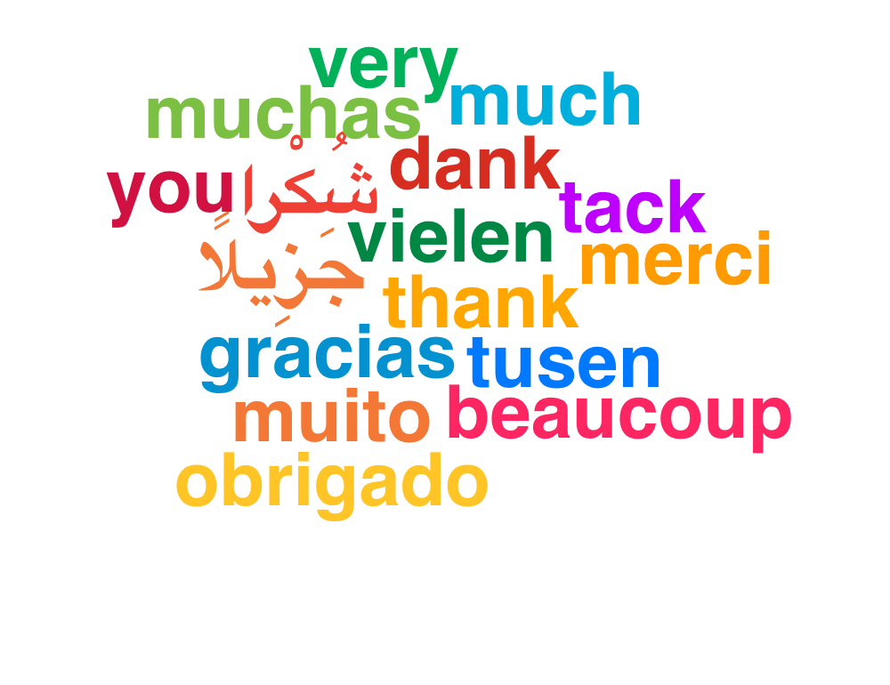

La documentation aujourd'hui
🚧 Documentation dispersée
(Confluence, Notion, README Git)
🔄 Dérive entre code & documentation
(Non synchronisée)
🚧 Difficulté d'accès pour les devs
(Freinant la productivité)


C’est bien de parler d’expérience utilisateur… mais sérieusement, qui pense à l’expérience développeur ?
Portail Développeur
Répertorie les différents composants des projets internes d'une société ou d'un département.
Recense les documentations ainsi que les API et les relie tous entre eux.
Backstage
- Plateforme open source
- Centralise les services et standardise les outils
Backstage

Backstage TechDocs
Plugin officiel Backstage
Génère une documentation statique à partir de Markdown
Docs versionnées dans le repo du composant
Backstage TechDocs: Architecture

Fichiers-clés
# mkdocs.yml
site_name: Mon Service
nav:
- Accueil: index.md
- API: api.md
Fichiers-clés
# catalog-info.yaml (extrait)
metadata:
name: mon-service
annotations:
backstage.io/techdocs-ref: dir:./docs
Conclusion
Visibilité centralisée pour les équipes
Automatisation via CI/CD
Docs versionnées avec le code

https://backstage.io